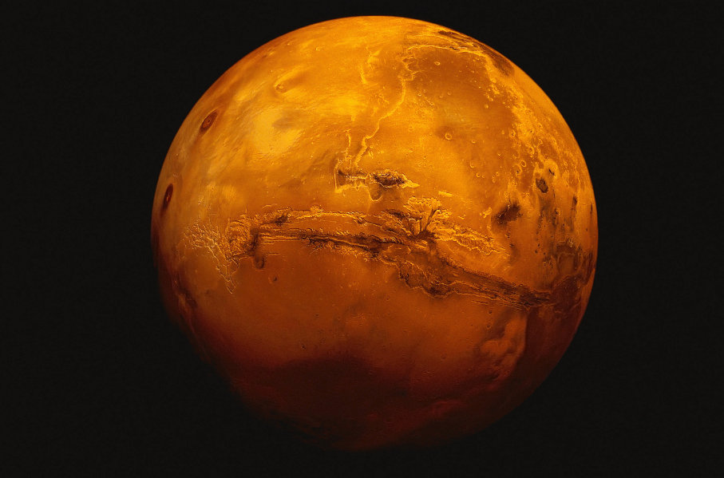

Planet Profiles
| Data | Mars | Uranus | Jupiter | Saturn |
|---|---|---|---|---|
| Images |  |  |
 |
|
| Diameter (km) | 6787 | 51118 | 142,800 | 120660 |
| Mass (kg) | 6.42 x 1023 | 8.68 x 1025 | 1.90 x 1027 | 5.69 x 1026 |
| Escape Velocity (m/s) | 5000 | 21300 | 59500 | 35600 |
| Average Distance from Sun | 1.524 AU (227,936,640 km) | 19.19 AU (2,870,972,200 km) | 5.203 AU (778,412,020 km) | 9.537 AU (1,426,725,400 km) |
| Rotation period (length of day) | 1.026 | 0.72 (17.9 Earth hours) | 0.41 (9.8 Earth hours) | 0.44 (10.2 Earth hours) |
| Mean Surface Temperature (K) | -- | 59 | 120(cloud tops) | 88K 1 bar level) |
| Revolution Period (length of year in Earth days) | 686.98 | 30,685 | 11.86 | 29.46 |
| Highest point on surface | Olympus Mons (about 24 km above surrounding lava plains) | Verona Rupes(20 kilometer) | -- | -- |